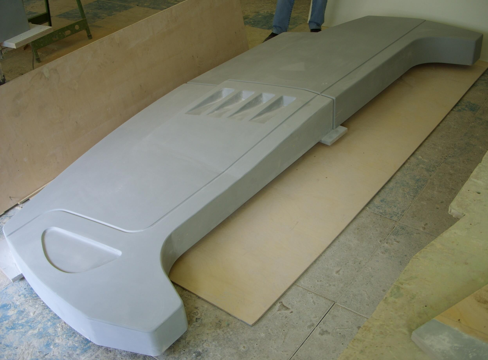
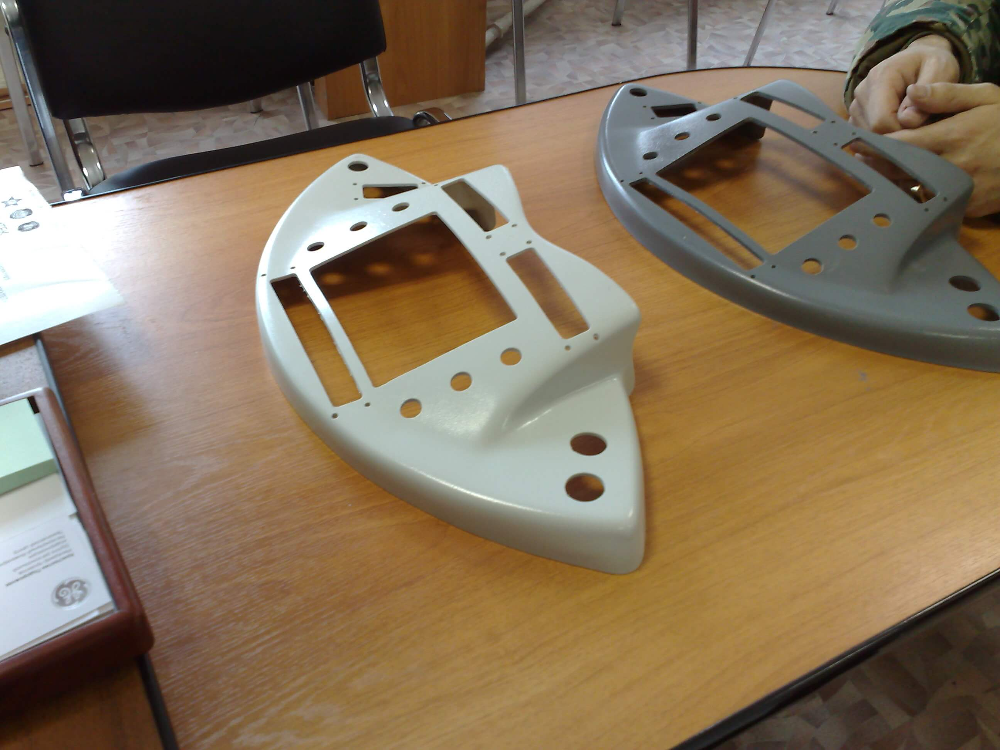
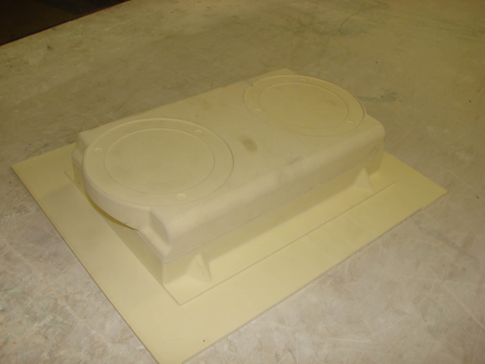

<section class="product page__global">
  <div class="product__inner">

    <h1 class="product__title page__title">Изготовление оснастки (штампы, пресс-формы), матриц и пуансонов

    </h1>
    <ul class="breadcrumb">
      <li class="breadcrumb__item">
        <a class="breadcrumb__link" href="index.html">Главная</a>
      </li>
      <li class="breadcrumb__item">
        <a class="breadcrumb__link" href="product.html">Продукция</a>
      </li>
      <li class="breadcrumb__item">
        <a class="breadcrumb__link" href="product-machine.html">Машиностроение</a>
      </li>
      <li class="breadcrumb__item">
        <a class="breadcrumb__link" href="product-machine-railroad.html">Железнодорожный транспорт</a>
      </li>
      <li class="breadcrumb__item">
        Изготовление оснастки (штампы, пресс-формы), матриц и пуансонов
      </li>
    </ul>

    <div class="wrapper">

      <div class="image__gallery image__gallery-part4">
        <a data-lightbox="part4" href="assets/img/product/railroad/part4/img-1.jpg">
          
        </a>

        <a data-lightbox="part4" href="assets/img/product/railroad/part4/img-2.jpg">
          
        </a>

        <a data-lightbox="part4" href="assets/img/product/railroad/part4/img-3.jpg">
          
        </a>

        <a data-lightbox="part4" href="assets/img/product/railroad/part4/img-4.jpg">
          
        </a>

        <a data-lightbox="part4" href="assets/img/product/railroad/part4/img-5.jpg">
          
        </a>

        <a data-lightbox="part4" href="assets/img/product/railroad/part4/img-6.jpg">
          
        </a>

        <a data-lightbox="part4" href="assets/img/product/railroad/part4/img-7.jpg">
          
        </a>

        <a data-lightbox="part4" href="assets/img/product/railroad/part4/img-8.jpg">
          
        </a>

        <a data-lightbox="part4" href="assets/img/product/railroad/part4/img-9.jpg">
          
        </a>

        <a data-lightbox="part4" href="assets/img/product/railroad/part4/img-10.jpg">
          
        </a>

        <a data-lightbox="part4" href="assets/img/product/railroad/part4/img-11.jpg">
          
        </a>

        <a data-lightbox="part4" href="assets/img/product/railroad/part4/img-12.jpg">
          
        </a>
      </div>
      <p class="page__text">
        В условиях жесткой конкурентной борьбы и насыщенности рынка готовой продукцией успех того или иного предприятия
        во многом определяется качеством выпускаемой продукции.
      </p>
      <p class="page__text">
        ООО НПП "ПОЛЕТ", успешно сочетая инженерную мысль, опыт разработки и серийного производства изделий из
        стеклопластика, производит изготовление точных мастер-моделей будущих деталей в масштабе 1:1 за минимально
        короткие сроки.
      </p>
      <p class="page__text">
        Этому способствует внедренная и отлаженная система автоматизации процесса изготовления мастер-моделей для
        изделий из стеклопластиков (система CAD/CAM). Система автоматизированного проектирования позволяет обеспечить
        высокую скорость и точность изготовления мастер-моделей, созданных в конструкторском бюро предприятия как на
        основе чертежей (эскизов) заказчика, так и готовых 3-D моделей, полученных от заказчика.
      </p>
      <p class="page__text">
        Кроме того, система автоматизированного проектирования позволяет своевременно вносить коррекции в 3-D модели с
        целью учета разнообразных технологических требований, пожеланий заказчика, нужд производства.
      </p>
      <p class="page__text">
        Следуя растущему спросу на качественные модели изделий, предприятие ООО НПП «ПОЛЕТ» внедряет в свое производство
        высокотехнологическое оборудование точной обработки, тем самым задавая новые стандарты качества изготовления
        мастер-моделей для будущих изделий. Для достижения высокого качества изготовления мастер-моделей предприятием
        используется трех-четырех-пяти координатные станки, соответствующие требованиям международного стандарта ISO
        9001:2000. Данное оборудование имеет большое количество опций, что позволяет полностью удовлетворить растущие
        производственные потребности как самого предприятия, так и заказчиков.
      </p>
      <p class="page__text">
        Высокое качество, профессионализм и по-современному короткие сроки изготовления мастер-моделей - вот что
        отличает ООО НПП «ПОЛЕТ» на рынке композиционных материалов.
      </p>


    </div>


  </div>
</section>